, never variance).
, never variance).Companion to the User Manual.
Equation numbers here are self-contained. Everything is streaming and
weight-based (, never variance).
arguments signatures with canonical
UpperCamelCase names so far (NV name matching remains
case-insensitive per MATLAB semantics; the breaks are typed constraints,
unknown-name rejection and enum-value casing): lsqvce.adjustVCEjoint (names
unchanged), lsqvce.adjustBlock (was
backend/reg/regLambda/regMatrix/parallel/verbose/showSeconds/exportDir),
lsqvce.iterateNoiseModel (was
updateTypes/maxIter/sigmaTol/whiteFactor/whiteLags/maxLag/orderGrid/acvTol/detrend/verbose).
Round a2: lsqvce.adjust carries canonical UpperCamelCase
names (Method/Sparse/DatumB/Sigma0/Verbose) with typed
validators and the case-sensitive Method enum, but stays on
inputParser by design — its open pass-through forwards
unmatched options to lsqvce.diagnose, which an
arguments block cannot express; the fluent
adjustVCE configurators keep their canonicalising merge for
the same reason. Stage (b) migrates the VCE core to typed
arguments signatures: vce, varComp,
redundancy, redundancyLags,
streamContribution, contribution,
psdVCE, sharedProbe — canonical
UpperCamelCase names (legacy casings keep matching), typed constraints,
unknown-name rejection, and case-sensitive lowercase enum values
('exact', 'rigorous', 'rademacher',
'lowest', …).
Enum values (e.g. 'QR') and out-of-range or wrongly-typed
option values now error at the signature; unknown option names are
rejected. Scalar positional constraints also moved into the typed
signatures and now surface MATLAB validator identifiers (e.g.
MATLAB:validators:mustBePositive for
redundancyLags's nMaxLag) where handwritten
lsqvce: checks used to fire; cross-argument shape checks
keep their lsqvce: identifiers. Remaining functions follow in the staged WP-39
rollout.| Symbol | Meaning |
|---|---|
 | observations, parameters, redundancy  |
 | design (Jacobian), observations, errors |
 | observation cofactor and weight,  |
 | a-priori and a-posteriori variance of unit weight |
 | normal matrix  and right side and right side  |
 | parameter cofactor |
 | residuals, residual cofactor |
 | redundancy number and leverage,  (whitened) (whitened) |
 | Baarda standardised residual, Pope tau |
 | common params, local params per arc, number of arcs |
The Gauss–Markov model and its best linear unbiased estimate:


Solved by whitening  (with
(with  ) and thin-QR
) and thin-QR
 , so the condition number is not squared [11,12]. The accumulator
updates
, so the condition number is not squared [11,12]. The accumulator
updates  (or
(or  ) batch by batch.
) batch by batch.

With the hat (influence) matrix  , in whitened
coordinates the leverage and partial redundancy of observation
, in whitened
coordinates the leverage and partial redundancy of observation  are
are

The last identity is what Level 0 of the report checks exactly. The
response of a residual to a single gross error  in observation is
in observation is
 . Baarda’s standardised residual and, when
. Baarda’s standardised residual and, when
 is unknown, Pope’s tau are
is unknown, Pope’s tau are

Internal reliability — the minimal detectable bias at test size
 , power
, power  — and its propagation into the parameters
(external reliability) are
— and its propagation into the parameters
(external reliability) are

The MDB scales as  : at
: at  it diverges — nothing
can be checked there. References: redundancy and reliability [1,4,20]; tau [2];
leverage by back-substitution through the stored triangular factor, not the
Hutchinson trace estimator [13] (exact partial redundancies are cheap when
it diverges — nothing
can be checked there. References: redundancy and reliability [1,4,20]; tau [2];
leverage by back-substitution through the stored triangular factor, not the
Hutchinson trace estimator [13] (exact partial redundancies are cheap when  is small, and exactness matters for these bounds).
is small, and exactness matters for these bounds).
For observation group  , Helmert’s variance factor is the group’s
weighted residual sum of squares over its partial redundancy [6,7,3]:
, Helmert’s variance factor is the group’s
weighted residual sum of squares over its partial redundancy [6,7,3]:

Förstner’s simplification writes  . Iterate
. Iterate
 to unity; only ratios are identifiable,
so one group (or the pooled
to unity; only ratios are identifiable,
so one group (or the pooled  ) fixes the gauge. VCE for gravity and
regularisation: [9,10]. For in the thousands the trace
) fixes the gauge. VCE for gravity and
regularisation: [9,10]. For in the thousands the trace
 is estimated matrix-free with
is estimated matrix-free with  Hutchinson
probes (lsqvce.vceHutchinson); see
Choosing an engine.
Hutchinson
probes (lsqvce.vceHutchinson); see
Choosing an engine.
The matrix-free trace machinery here is Ellmer’s [21, §6.5.6]: the Hutchinson estimator [13] with Rademacher probes
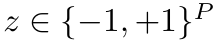
and the “stacked” form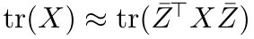
,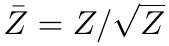
, applied through the shared Cholesky factor so is never inverted. The between-group
update
is never inverted. The between-group
update 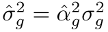
with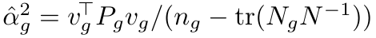
is his eq. (2.6.12). What this toolbox does differently is worth stating plainly, because it changes what the estimator is pointed at: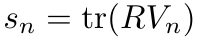
over the lag matrices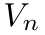
of one arc’s noise model [21, eqs. (6.5.36)–(6.5.44)] — the SHAPE side. Here the same estimator is applied to the between-group reduced common normal,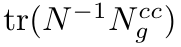
— the SCALE side and the contribution matrix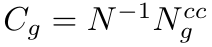
. Same tool, different target.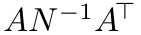
monolithically. Here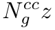
is formed by streaming the arcs of group after per-system local Schur
elimination, never materialising any group normal (see §4), so the memory
cost is 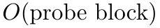
, not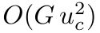
.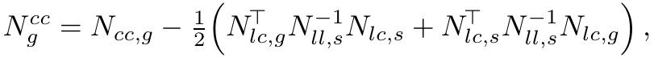
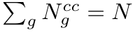
, so the group traces sum to and the contribution diagonals to
and the contribution diagonals to 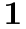
). Ellmer’s groups are uncorrelated (block-diagonal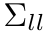
), so this coupling does not arise in the thesis and the split is an addition here. explicitly is prohibitive. Here the
exact per-arc leverage path is the default and the authority, with
Hutchinson opt-in for large ; and the same probes also yield the
per-parameter contribution diagonal 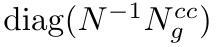
, which is beyond the scalar trace the VCE update needs (lsqvce.streamContribution, lsqvce.contribution).Gravity recovery stacks  arcs (or satellite-days) that share the
common parameters (the field) but each carry their own
arcs (or satellite-days) that share the
common parameters (the field) but each carry their own  local nuisance
parameters. Ordering locals first, then commons, the normal matrix is bordered
block-diagonal — a block arrow. Eliminating every local block by its Schur
complement leaves the reduced common system
local nuisance
parameters. Ordering locals first, then commons, the normal matrix is bordered
block-diagonal — a block arrow. Eliminating every local block by its Schur
complement leaves the reduced common system

Per-arc QR (the numerically preferred path): one Householder QR triangularises
the local columns and applies the same reflectors to the common columns
and the whitened observations,

The trailing rows  are the arc’s contribution to the common
problem, cleaned of its nuisance parameters — a QR realisation of the Schur
complement, formed without squaring the design. The accumulator appends each
to a running QR of the reduced common system, so memory is
are the arc’s contribution to the common
problem, cleaned of its nuisance parameters — a QR realisation of the Schur
complement, formed without squaring the design. The accumulator appends each
to a running QR of the reduced common system, so memory is
 independent of . Each local block follows by back-substitution,
independent of . Each local block follows by back-substitution,

'KeepLocal',true
the per-arc factors are retained so
lsqvce.diagnoseAccum rebuilds the full hat
matrix and reports the true  (hence MDB and reliability) rather than the
inflated commons-only values [3,10]. Integrity check:
(hence MDB and reliability) rather than the
inflated commons-only values [3,10]. Integrity check:
 .
.If the noise is a stationary AR( ) process with polynomial
) process with polynomial
 , the FIR recursion
, the FIR recursion

whitens it; applying the same filter to every column of  and to
and to  realises implicitly — a banded operator, never the dense
realises implicitly — a banded operator, never the dense
 matrix. For vector observations a VAR() whitener generalises it
with the exact stationary start-up for the first epochs, so the operator
equals the dense block-Cholesky GLS solve row for row. When the covariance
separates in space and time,
matrix. For vector observations a VAR() whitener generalises it
with the exact stationary start-up for the first epochs, so the operator
equals the dense block-Cholesky GLS solve row for row. When the covariance
separates in space and time,
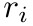
, the whitener is the Kronecker product
(lsqvce.separableWhiten) — what makes per-epoch vector data affordable. Orders are chosen by information criteria and validated by a Ljung–Box test on the whitened residuals [17].
lsqvce.selectArAcv chooses the AR order
without a candidate grid: one Levinson recursion yields the innovation variance of
every lower order through the reflection coefficients  ,
,
 , and it returns the smallest order whose
refitted autocovariance is within
, and it returns the smallest order whose
refitted autocovariance is within AcvTol — the same decorrelation
target the whiteness test uses. It guards two failure modes a single AR cannot fix:
a near-unit root (detrend first) and a plateau above tolerance (sharp 1/rev, 2/rev
lines — move to lsqvce.ar2arma).
 . Whitening estimates the
temporal SHAPE
. Whitening estimates the
temporal SHAPE  within each group; variance-component estimation
(§3) estimates the SCALE
within each group; variance-component estimation
(§3) estimates the SCALE  between groups. The loop
iterates solve → whiten → VCE-reweight and converges only when every
stream is white AND every
between groups. The loop
iterates solve → whiten → VCE-reweight and converges only when every
stream is white AND every  . Driven end to end by
lsqvce.adjustVCE.
. Driven end to end by
lsqvce.adjustVCE.[1] Baarda, W. (1968). A Testing Procedure for Use in Geodetic Networks. Netherlands Geodetic Commission, Publications on Geodesy, New Series, 2(5). Delft.
[2] Pope, A. J. (1976). The Statistics of Residuals and the Detection of Outliers. NOAA Technical Report NOS 65 NGS 1. Rockville, MD.
[3] Koch, K.-R. (1999). Parameter Estimation and Hypothesis Testing in Linear Models, 2nd ed. Springer, Berlin.
[4] Teunissen, P. J. G. (2006). Testing Theory: an Introduction, 2nd ed. VSSD, Delft.
[5] Teunissen, P. J. G. (2003). Adjustment Theory: an Introduction. VSSD, Delft.
[6] Förstner, W. (1979). Ein Verfahren zur Schätzung von Varianz- und Kovarianzkomponenten. Allgemeine Vermessungs-Nachrichten, 86, 446–453.
[7] Helmert, F. R. (1907). Die Ausgleichungsrechnung nach der Methode der kleinsten Quadrate, 2nd ed. Teubner, Leipzig.
[8] Grafarend, E. W. & Schaffrin, B. (1993). Ausgleichungsrechnung in linearen Modellen. BI-Wissenschaftsverlag, Mannheim.
[9] Koch, K.-R. & Kusche, J. (2002). Regularization of geopotential determination from satellite data by variance components. Journal of Geodesy, 76(5), 259–268.
[10] Kusche, J. (2003). A Monte-Carlo technique for weight estimation in satellite geodesy. Journal of Geodesy, 76(11–12), 641–652.
[11] Golub, G. H. & Van Loan, C. F. (2013). Matrix Computations, 4th ed. Johns Hopkins University Press, Baltimore.
[12] Björck, Å. (1996). Numerical Methods for Least Squares Problems. SIAM, Philadelphia.
[13] Hutchinson, M. F. (1990). A stochastic estimator of the trace of the influence matrix for Laplacian smoothing splines. Communications in Statistics – Simulation and Computation, 19(2), 433–450.
[14] Klees, R., Ditmar, P. & Broersen, P. (2003). How to handle colored observation noise in large least-squares problems. Journal of Geodesy, 76(11–12), 629–640.
[15] Ditmar, P., Kuznetsov, V., van Eck van der Sluijs, A. A., Schrama, E. & Klees, R. (2006). A model of the Earth’s gravity field. Journal of Geodesy, 79(10–11), 586–601.
[16] Durbin, J. (1959). Efficient estimation of parameters in moving-average models. Biometrika, 46(3–4), 306–316.
[17] Ljung, G. M. & Box, G. E. P. (1978). On a measure of lack of fit in time series models. Biometrika, 65(2), 297–303.
[18] Wen, H. Y., Kruizinga, G., Paik, M., et al. (2019). GRACE-FO Level-1 Data Product User Handbook. JPL D-56935, Jet Propulsion Laboratory, Pasadena.
[19] Kornfeld, R. P., Arnold, B. W., Gross, M. A., et al. (2019). GRACE-FO: the Gravity Recovery and Climate Experiment Follow-On mission. Journal of Spacecraft and Rockets, 56(3), 931–951.
[20] Schaffrin, B. (1997). Reliability measures for correlated observations. Journal of Surveying Engineering, 123(3), 126–137.
[21] Ellmer, M. (2018). Contributions to GRACE Gravity Field Recovery: Improvements in Dynamic Orbit Integration, Stochastic Modelling of the Antenna Offset Correction, and Co-Estimation of Satellite Orbits. PhD thesis, Graz University of Technology.